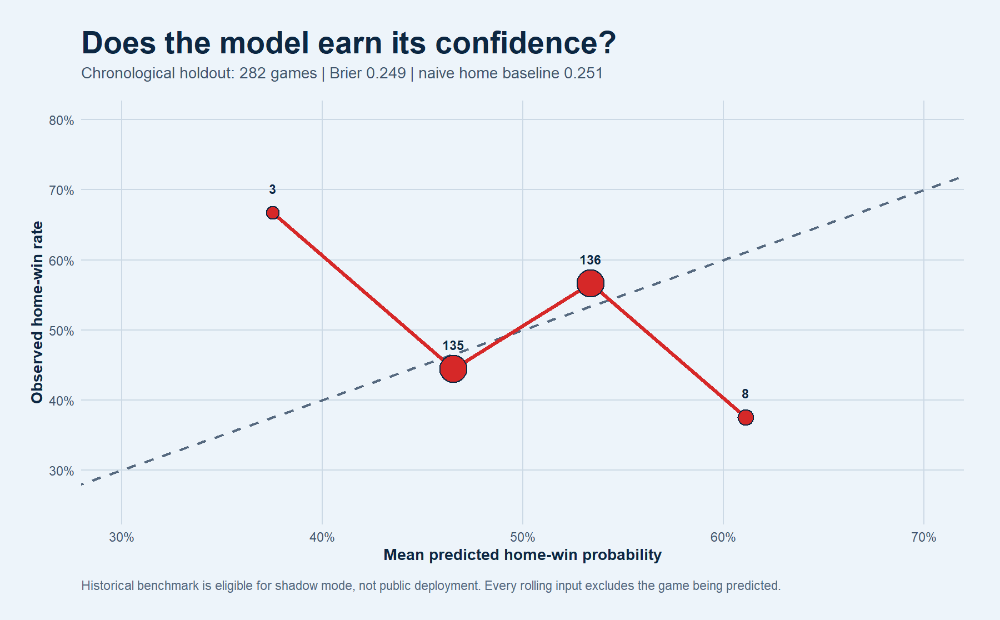

MLB games
17
Game IDs, teams, first pitch, venue, and status.
Daily simulation center
The production page will turn confirmed game inputs into transparent win probabilities, score ranges, matchup drivers, bullpen effects, and player opportunities, with uncertainty visible everywhere.
BaseballR supplies the schedule, probable starters, posted orders, and active rosters. Park coordinates route each game to its Open-Meteo window, and the development simulator now consumes the resulting game rows.
Game IDs, teams, first pitch, venue, and status.
72 confirmed batting-order rows.
246 workload-qualified bullpen rows remain after the roster join.
17 of 17 park environments resolved
| Away | Home | Away starter | Home starter | Away order | Home order | Park weather | Temp | Wind | Rain | Input state |
|---|---|---|---|---|---|---|---|---|---|---|
| Pittsburgh Pirates | New York Yankees | Mitch Keller | Gerrit Cole | confirmed | confirmed | Bronx, New York | 73 F | 8.0 mph | 18% | ready |
| Baltimore Orioles | Boston Red Sox | Dean Kremer | Jake Bennett | confirmed | confirmed | Boston, Massachusetts | 72 F | 6.0 mph | 21% | ready |
| San Francisco Giants | Kansas City Royals | Landen Roupp | Seth Lugo | confirmed | confirmed | Kansas City, Missouri | 72 F | 4.9 mph | 1% | ready |
| New York Mets | Milwaukee Brewers | Christian Scott | Logan Henderson | confirmed | confirmed | Milwaukee, Wisconsin | 61 F | 5.6 mph | 0% | ready |
| Washington Nationals | Colorado Rockies | Cade Cavalli | Gabriel Hughes | missing | missing | Denver, Colorado | 71 F | 4.8 mph | 6% | conditional |
| Athletics | Arizona Diamondbacks | Gage Jump | Merrill Kelly | missing | missing | Phoenix, Arizona | 86 F | 5.5 mph | 15% | conditional |
| Cincinnati Reds | Seattle Mariners | Brady Singer | Emerson Hancock | missing | missing | Seattle, Washington | 68 F | 4.3 mph | 0% | conditional |
| St. Louis Cardinals | Los Angeles Angels | Hunter Dobbins | Reid Detmers | missing | missing | Anaheim, California | 73 F | 3.1 mph | 0% | conditional |
| Minnesota Twins | Cleveland Guardians | Bailey Ober | Slade Cecconi | missing | missing | Cleveland, Ohio | 67 F | 9.9 mph | 40% | conditional |
| Los Angeles Dodgers | Philadelphia Phillies | Eric Lauer | Aaron Nola | missing | missing | Philadelphia, Pennsylvania | 74 F | 6.6 mph | 61% | conditional |
| Pittsburgh Pirates | New York Yankees | Bubba Chandler | Max Fried | missing | missing | Bronx, New York | 73 F | 8.0 mph | 18% | conditional |
| Tampa Bay Rays | Toronto Blue Jays | Griffin Jax | Braydon Fisher | missing | missing | Toronto, Ontario | 61 F | 10.2 mph | 1% | conditional |
| Baltimore Orioles | Boston Red Sox | Kyle Bradish | missing | missing | Boston, Massachusetts | 72 F | 6.0 mph | 21% | conditional | |
| San Diego Padres | Atlanta Braves | Michael King | Martín Pérez | missing | missing | Atlanta, Georgia | 76 F | 4.6 mph | 1% | conditional |
| Chicago White Sox | Texas Rangers | Anthony Kay | Tyler Alexander | missing | missing | Arlington, Texas | 89 F | 2.5 mph | 0% | conditional |
| Detroit Tigers | Chicago Cubs | Keider Montero | Colin Rea | missing | missing | Chicago, Illinois | 63 F | 12.4 mph | 7% | conditional |
| Miami Marlins | Houston Astros | Sandy Alcantara | Peter Lambert | missing | missing | Houston, Texas | 81 F | 4.5 mph | 0% | conditional |
Confirmed orders are simulated through two continuous phases: the probable starter, then the opposing active-roster bullpen. The same draws produce full-game hitter lines and starter strikeout distributions.
Full-game hitter draws include posted batting-order opportunity, the probable starter, the active-roster bullpen quality layer, and the run environment.
| Rank | Player | Team | Opponent | Probability | Mean |
|---|---|---|---|---|---|
| 1 | Christian Encarnacion-Strand | Baltimore Orioles | Boston Red Sox | 36.8% | 0.44 |
| 2 | Esmerlyn Valdez | Pittsburgh Pirates | New York Yankees | 34.0% | 0.40 |
| 3 | Ben Rice | New York Yankees | Pittsburgh Pirates | 28.3% | 0.32 |
| 4 | Willson Contreras | Boston Red Sox | Baltimore Orioles | 21.8% | 0.24 |
| 5 | Brandon Lowe | Pittsburgh Pirates | New York Yankees | 21.1% | 0.23 |
| 6 | Rafael Devers | San Francisco Giants | Kansas City Royals | 20.2% | 0.22 |
| 7 | Casey Schmitt | San Francisco Giants | Kansas City Royals | 17.8% | 0.19 |
| 8 | Willy Adames | San Francisco Giants | Kansas City Royals | 17.1% | 0.18 |
| 9 | Bryce Eldridge | San Francisco Giants | Kansas City Royals | 16.9% | 0.18 |
| 10 | Carter Jensen | Kansas City Royals | San Francisco Giants | 16.6% | 0.18 |
Each hitter continues through the same batting order when the simulation moves from the starter phase to the bullpen.
| Rank | Player | Team | Opponent | Probability | Mean |
|---|---|---|---|---|---|
| 1 | Luis Arraez | San Francisco Giants | Kansas City Royals | 79.4% | 1.37 |
| 2 | Jake Mangum | Pittsburgh Pirates | New York Yankees | 75.1% | 1.19 |
| 3 | Jung Hoo Lee | San Francisco Giants | Kansas City Royals | 74.0% | 1.17 |
| 4 | Ceddanne Rafaela | Boston Red Sox | Baltimore Orioles | 73.7% | 1.18 |
| 5 | Willson Contreras | Boston Red Sox | Baltimore Orioles | 73.4% | 1.11 |
| 6 | Masataka Yoshida | Boston Red Sox | Baltimore Orioles | 73.2% | 1.11 |
| 7 | Heliot Ramos | San Francisco Giants | Kansas City Royals | 72.2% | 1.12 |
| 8 | Nick Gonzales | Pittsburgh Pirates | New York Yankees | 72.1% | 1.07 |
| 9 | Casey Schmitt | San Francisco Giants | Kansas City Royals | 71.9% | 1.07 |
| 10 | Ben Rice | New York Yankees | Pittsburgh Pirates | 70.7% | 1.09 |
Doubles, triples, and home runs are simulated as mutually exclusive plate-appearance outcomes.
| Rank | Player | Team | Opponent | Probability | Mean |
|---|---|---|---|---|---|
| 1 | Luis Arraez | San Francisco Giants | Kansas City Royals | 40.1% | 0.49 |
| 2 | Ben Rice | New York Yankees | Pittsburgh Pirates | 39.0% | 0.47 |
| 3 | Willson Contreras | Boston Red Sox | Baltimore Orioles | 38.2% | 0.44 |
| 4 | Ceddanne Rafaela | Boston Red Sox | Baltimore Orioles | 37.6% | 0.46 |
| 5 | Wilyer Abreu | Boston Red Sox | Baltimore Orioles | 37.3% | 0.43 |
| 6 | Heliot Ramos | San Francisco Giants | Kansas City Royals | 37.1% | 0.45 |
| 7 | Christian Encarnacion-Strand | Baltimore Orioles | Boston Red Sox | 36.8% | 0.44 |
| 8 | Rafael Devers | San Francisco Giants | Kansas City Royals | 36.3% | 0.42 |
| 9 | Brandon Lowe | Pittsburgh Pirates | New York Yankees | 36.1% | 0.42 |
| 10 | Tsung-Che Cheng | Boston Red Sox | Baltimore Orioles | 35.7% | 0.41 |
The total-base board preserves each simulated event mix instead of treating every hit as equivalent.
| Rank | Player | Team | Opponent | Probability | Mean |
|---|---|---|---|---|---|
| 1 | Luis Arraez | San Francisco Giants | Kansas City Royals | 55.8% | 1.97 |
| 2 | Ceddanne Rafaela | Boston Red Sox | Baltimore Orioles | 48.6% | 1.82 |
| 3 | Willson Contreras | Boston Red Sox | Baltimore Orioles | 48.1% | 2.05 |
| 4 | Ben Rice | New York Yankees | Pittsburgh Pirates | 48.0% | 2.21 |
| 5 | Heliot Ramos | San Francisco Giants | Kansas City Royals | 48.0% | 1.89 |
| 6 | Jung Hoo Lee | San Francisco Giants | Kansas City Royals | 46.1% | 1.66 |
| 7 | Masataka Yoshida | Boston Red Sox | Baltimore Orioles | 45.8% | 1.71 |
| 8 | Wilyer Abreu | Boston Red Sox | Baltimore Orioles | 45.8% | 1.84 |
| 9 | Jake Mangum | Pittsburgh Pirates | New York Yankees | 44.3% | 1.59 |
| 10 | Rafael Devers | San Francisco Giants | Kansas City Royals | 43.7% | 1.85 |
Probable starters draw a game-specific batters-faced distribution against the posted opposing order.
| Rank | Player | Team | Opponent | Probability | Mean |
|---|---|---|---|---|---|
| 1 | Gerrit Cole | New York Yankees | Pittsburgh Pirates | 68.8% | 5.61 |
| 2 | Landen Roupp | San Francisco Giants | Kansas City Royals | 62.7% | 5.24 |
| 3 | Jake Bennett | Boston Red Sox | Baltimore Orioles | 60.7% | 5.25 |
| 4 | Dean Kremer | Baltimore Orioles | Boston Red Sox | 58.5% | 5.01 |
| 5 | Christian Scott | New York Mets | Milwaukee Brewers | 55.6% | 4.89 |
| 6 | Mitch Keller | Pittsburgh Pirates | New York Yankees | 55.1% | 4.89 |
| 7 | Logan Henderson | Milwaukee Brewers | New York Mets | 50.9% | 4.64 |
| 8 | Seth Lugo | Kansas City Royals | San Francisco Giants | 47.0% | 4.51 |
The upper-tail board responds to starter workload, the opposing order, and both pitcher and hitter strikeout rates.
| Rank | Player | Team | Opponent | Probability | Mean |
|---|---|---|---|---|---|
| 1 | Gerrit Cole | New York Yankees | Pittsburgh Pirates | 32.6% | 5.61 |
| 2 | Jake Bennett | Boston Red Sox | Baltimore Orioles | 27.4% | 5.25 |
| 3 | Landen Roupp | San Francisco Giants | Kansas City Royals | 25.4% | 5.24 |
| 4 | Dean Kremer | Baltimore Orioles | Boston Red Sox | 21.9% | 5.01 |
| 5 | Christian Scott | New York Mets | Milwaukee Brewers | 21.2% | 4.89 |
| 6 | Mitch Keller | Pittsburgh Pirates | New York Yankees | 20.2% | 4.89 |
| 7 | Logan Henderson | Milwaukee Brewers | New York Mets | 16.2% | 4.64 |
| 8 | Seth Lugo | Kansas City Royals | San Francisco Giants | 15.7% | 4.51 |
Each game card now comes from today’s schedule and shows the simulated win split, score center, uncertainty, close-game chance, and input status. These are pre-calibration research outputs, not public betting forecasts.
The closest matchup on today’s scheduled slate shows the current score distribution, model drivers, and honest input limitations.
The page can now simulate today’s actual games. Development probabilities stay clearly labeled until current PBP workload, empirical park effects, and a chronological backtest pass.
17 games
4/17 confirmed
16/17 matched
Roster verified
Current
Neutral placeholder
Not yet passed
The fitted score layer learned from prior-only rolling team production, then faced a completely later block of games. It improved the raw score scale and narrowly beat the simple home-team Brier baseline, earning shadow-mode evaluation without overwriting the public board.

Training ended June 26
Naive home baseline 0.251 - Shadow-mode eligible
Raw scale 2.93 before fitting
300 more game forecasts before live probability calibration
Every game and player-event probability is archived with its inputs and model version. Late builds are permanently excluded.
Team scores, winners, hitter events, and starter strikeouts are joined by exact game and MLBAM player IDs.
Brier score, log loss, run MAE, calibration bins, and player-event residuals reveal whether the model is too aggressive or too conservative.
Only coefficients that improve later unseen games enter shadow mode; public probabilities require a second approval gate.
A fixed tied-game workload path shows when the pooled hook model begins shifting probability toward the bullpen.
72 pitches · 19 BF · 2x through
88 pitches · 24 BF · 3x through
105 pitches · 28 BF · 3x through
Descriptive pooled-model scenarios, not causal manager tendencies or a forecast for a named starter.
Once a starter exits, each three-batter pocket reranks the available bullpen and carries planned workload into the next decision.
Availability 100.0% · matchup 100.0% · planned 12 pitches
Availability 100.0% · matchup 70.0% · planned 12 pitches
Availability 72.5% · matchup 70.0% · planned 12 pitches
Availability 100.0% · matchup 35.0% · planned 12 pitches
Availability 100.0% · matchup 70.0% · planned 12 pitches
Availability 72.5% · matchup 35.0% · planned 12 pitches
The live development run is shown here. Public release remains blocked until calibration and the remaining data-quality gates pass.
| Away | Home | Away win | Home win | Away runs | Home runs | Total | One-run | Extras | Model lean |
|---|---|---|---|---|---|---|---|---|---|
| Pittsburgh Pirates | New York Yankees | 48.2% | 51.8% | 4.9 | 5.0 | 9.9 | 34.3% | 13.2% | New York Yankees |
| Baltimore Orioles | Boston Red Sox | 31.2% | 68.8% | 3.4 | 4.8 | 8.1 | 33.8% | 12.7% | Boston Red Sox |
| San Francisco Giants | Kansas City Royals | 69.0% | 31.0% | 5.2 | 3.8 | 9.0 | 32.1% | 12.2% | San Francisco Giants |
| New York Mets | Milwaukee Brewers | 33.4% | 66.6% | 3.2 | 4.4 | 7.6 | 35.8% | 13.8% | Milwaukee Brewers |
| Washington Nationals | Colorado Rockies | 46.4% | 53.6% | 3.9 | 4.2 | 8.1 | 38.1% | 14.5% | Colorado Rockies |
| Athletics | Arizona Diamondbacks | 68.8% | 31.2% | 5.5 | 4.0 | 9.5 | 31.8% | 11.7% | Athletics |
| Cincinnati Reds | Seattle Mariners | 28.4% | 71.6% | 3.6 | 5.3 | 8.9 | 31.7% | 12.1% | Seattle Mariners |
| St. Louis Cardinals | Los Angeles Angels | 42.4% | 57.6% | 3.8 | 4.4 | 8.2 | 37.4% | 14.4% | Los Angeles Angels |
| Minnesota Twins | Cleveland Guardians | 47.6% | 52.4% | 4.5 | 4.7 | 9.2 | 35.4% | 13.0% | Cleveland Guardians |
| Los Angeles Dodgers | Philadelphia Phillies | 69.6% | 30.4% | 5.2 | 3.7 | 8.9 | 32.6% | 11.6% | Los Angeles Dodgers |
| Pittsburgh Pirates | New York Yankees | 33.5% | 66.5% | 4.0 | 5.3 | 9.3 | 32.6% | 12.3% | New York Yankees |
| Tampa Bay Rays | Toronto Blue Jays | 54.4% | 45.6% | 4.3 | 4.0 | 8.3 | 37.1% | 14.0% | Tampa Bay Rays |
| Baltimore Orioles | Boston Red Sox | 54.4% | 45.6% | 4.4 | 4.0 | 8.4 | 37.0% | 13.9% | Baltimore Orioles |
| San Diego Padres | Atlanta Braves | 44.4% | 55.6% | 4.0 | 4.4 | 8.4 | 36.5% | 13.8% | Atlanta Braves |
| Chicago White Sox | Texas Rangers | 33.2% | 66.8% | 3.8 | 5.1 | 9.0 | 33.6% | 12.6% | Texas Rangers |
| Detroit Tigers | Chicago Cubs | 53.4% | 46.6% | 5.1 | 4.8 | 9.9 | 34.0% | 12.6% | Detroit Tigers |
| Miami Marlins | Houston Astros | 49.2% | 50.8% | 4.6 | 4.6 | 9.2 | 35.6% | 13.6% | Houston Astros |
The scheduled slate and player simulations now feed a permanent pregame ledger. The expanded chronological benchmark has reached shadow-mode eligibility; the next work is accumulating clean live forecasts and adding richer prior-only features.
Incremental PBP cache, FanGraphs refreshes, weekly award checkpoints, schedule, starters, lineups, rosters, and weather.
Actual games now run through lineup, starter, active-bullpen, weather, home-field, team-score, hitter-event, and starter-strikeout layers.
The latest later-game holdout narrowly clears its declared baseline. Future pregame snapshots will test score, win, home-run, hit, total-base, and strikeout probabilities before any public promotion.
Only model versions that repeat their advantage on clean live forecasts can replace development probabilities or supply newsletter excerpts.
Build path
The score layer now has a complete output contract. The next work is improving what enters it and proving that the probabilities remain calibrated on games the model has not seen.
01
Complete-game draws, win splits, score intervals, close-game likelihood, and reproducible seeds.
02
BaseballR schedule, probable starters, posted batting orders, active rosters, park coordinates, and Open-Meteo game windows now populate the daily contract. Their model effects are the next step.
03
The scenario planner carries hook probability, workload, leverage, batter handedness, alternatives, and reliever choice across the final three innings. The active-roster gate now removes ineligible bullpen candidates.
04
Rolling backtests, probability calibration, model-version tracking, misses review, and a searchable projection archive.
Daily public projections will appear here only after time-based backtesting and calibration checks pass. This page intentionally does not present experimental probabilities as betting advice.
The pooled hook model is evaluated on later game dates that were not used for fitting. These are development diagnostics, not production probabilities.
Training through 2026-05-28
Higher means pulled and retained decisions are ranked more distinctly.
Lower is better; calibration still requires improvement before publishing forecasts.
Observed first, mean prediction second.
Representative tied-game contexts scored through the pooled model. These fixed scenarios isolate the shape of the model, not a specific manager.
7 inning | tied game
83.9% modeled hook probability
105 pitches | 28 batters faced
6 inning | tied game
32.0% modeled hook probability
88 pitches | 24 batters faced
7 inning | tied game
18.1% modeled hook probability
12 pitches | 3 batters faced
| Rank | Situation | Role | Inn. | Pitches | BF | TTO | Hook prob. | Relative |
|---|---|---|---|---|---|---|---|---|
| 1 | Starter, deep workload | starter | 7 | 105 | 28 | 3 | 83.9% | higher |
| 2 | Starter, third time through | starter | 6 | 88 | 24 | 3 | 32.0% | higher |
| 3 | Reliever, first pocket | reliever | 7 | 12 | 3 | 1 | 18.1% | middle |
| 4 | Reliever, extended outing | reliever | 8 | 30 | 8 | 1 | 17.3% | middle |
| 5 | Starter, middle innings | starter | 5 | 72 | 19 | 2 | 4.0% | lower |
| 6 | Starter, early workload | starter | 3 | 45 | 12 | 2 | 0.9% | lower |
Coefficient direction is descriptive. Correlated game situations mean these are not isolated causal effects.
| Factor | Coefficient | Association |
|---|---|---|
| Workload beyond 60 pitches | 2.29 | Higher modeled likelihood |
| Reliever role | 1.68 | Higher modeled likelihood |
| Starter role | -1.56 | Lower modeled likelihood |
| Batters faced beyond 18 | 1.16 | Higher modeled likelihood |
| Adverse plate-appearance result | -0.79 | Lower modeled likelihood |
| Later inning | -0.16 | Lower modeled likelihood |
| Score within two runs | 0.16 | Higher modeled likelihood |
| Team trailing by four-plus | -0.09 | Lower modeled likelihood |
| Third time through order | -0.04 | Lower modeled likelihood |
Left- and right-handed matchup pockets combine recent availability, pitcher role, exact MLBAM identity, handedness, and current results allowed.
| Next batter | Rank | Reliever | Throws | Role | Available | Performance | Matchup | Selector |
|---|---|---|---|---|---|---|---|---|
| L | 1 | Jovani Morán | L | reliever | 100.0% | 72.0% | 100.0% | 93.0 |
| L | 2 | Aroldis Chapman | L | reliever | 91.7% | 65.8% | 100.0% | 88.1 |
| R | 1 | Garrett Whitlock | R | reliever | 93.9% | 70.3% | 70.0% | 84.1 |
| R | 3 | Jovani Morán | L | reliever | 100.0% | 72.0% | 40.0% | 81.0 |
| Bin | Rows | Min predicted | Max predicted | Mean predicted | Observed hook rate |
|---|---|---|---|---|---|
| 1 | 1,684 | 0.3% | 0.4% | 0.4% | 0.5% |
| 2 | 1,684 | 0.4% | 0.9% | 0.7% | 0.5% |
| 3 | 1,685 | 0.9% | 0.9% | 0.9% | 0.1% |
| 4 | 1,684 | 0.9% | 1.7% | 1.0% | 0.9% |
| 5 | 1,685 | 1.7% | 7.1% | 4.6% | 4.3% |
| 6 | 1,684 | 7.1% | 9.1% | 8.2% | 8.7% |
| 7 | 1,684 | 9.1% | 14.6% | 12.2% | 9.5% |
| 8 | 1,685 | 14.6% | 16.9% | 15.8% | 18.2% |
| 9 | 1,684 | 16.9% | 19.3% | 18.0% | 22.4% |
| 10 | 1,685 | 19.3% | 95.2% | 30.4% | 23.9% |